走势类型与同级别分解¶
适用范围：本文描述 fqchan04 内核的划分实现。fqchan01 有独立的包含与分型文档，fqchan05（均线笔、子浪）与 fqchan06（极简分笔）的实现差异见各自插件文档。
走势类型是缠论结构体系的顶层构件。《K线预处理》到《中枢》自下而上搭好了分型、笔、线段、中枢四级结构，本章把它们装配成最后一级——走势类型，并给出建立在其上的操作纪律：同级别分解。走势类型往上直接承接买卖点（fqcopilot 的《买卖点：一二三类的判定》）：一类买点是下跌走势类型的终点，三类买点是走势类型终结的确认方式——离开走势类型，买卖点的讨论就没有锚点。
本章回答五个问题：走势类型如何定义与记法、划分算法如何从中枢序列构造走势类型、走势类型如何命名分类、同级别分解在工程上如何落地、走势状态如何进入策略与信号编码。
走势类型：概念与 a/A/b 记法¶
三种走势类型与两条分解定理¶
缠论原文对走势类型的定义建立在中枢之上（中枢的构造见《中枢》）：
- 盘整：某级别的一个完成的走势类型，只包含一个中枢；
- 趋势：某级别的一个完成的走势类型，包含至少两个依次同向的中枢——向上为上涨趋势，向下为下跌趋势。
注意「完成」二字。走势类型以完成为前提，这是「走势终完美」的直接推论：任何走势最终都要完成，完成后必然转化为其他类型的走势。判定类型时先问「这个走势类型走完了吗」，未完成的结构只能谈当下状态，不能定类型。
两条分解定理是整个体系的骨架：
- 分解定理一：任何级别的任何走势，都可以分解成同级别「盘整」「下跌」「上涨」三种走势类型的连接；
- 分解定理二：任何级别的任何走势类型，都至少由三段以上次级别走势类型构成。
定理一保证了同级别分解的合法性（本章后半的主题），定理二给出了走势类型的最小构成——三段。番茄缠论插件把「走势至少三段」写进了划分规则（见反向终结的重划分一节）。
a/A/b 记法¶
谈论走势类型时，缠师留下了一套紧凑记法：小写字母表示连接段，大写字母表示中枢。
- 盘整记作
a + A + b：一个中枢 A，前后各一段次级别连接； - 趋势记作
a + A + b + B + c：两个同向中枢 A、B，中间以 b 相连。
以一个 5 分钟级别的下跌 a+A+b+B+c 为例做数量估算：a、b、c 是连接段，级别最多是 1 分钟级别，最极端的情况可以只是一个缺口；A、B 是 5 分钟中枢，各由至少 3 段 1 分钟走势类型构成。若 a、b、c 都按 1 分钟走势类型计，整个下跌合计约 9 个 1 分钟走势类型。而一个 30 分钟盘整同样至少由 9 个 1 分钟走势类型构成——从这个数量平衡可以直观理解「下跌 + 盘整」的连接中，盘整的中枢级别必然大于下跌中的中枢级别：级别一样的话数量就对不上。
这套记法还区分了两种容易混淆的演化：
- 两个完成走势类型的连接：「5 分钟下跌 + 30 分钟盘整」，各自完成，各是各的走势类型；
- 一个未完成走势类型的延续：
a+A+b+B+c中 B+c 发生中枢扩展（如 5 分钟扩展成 30 分钟），此时a+A+b折叠记作 a~，整体成为a~ + A~，仍在同一个走势类型里继续演化。
前者是分解，后者是扩展——划分算法处理的是前者，后者在插件口径中不做扩展处理（见下文）。
当下性：B 的级别不可预知¶
理论上还有一条当下性约束，划分算法的设计必须尊重它：在 a+A+b 走出来时，你不可能知道 B 的级别。只要 b 不背驰，B 至少与 A 同级别，但 B 完全可能比 A 大——那时 a+A+b 整体退化为一个新的连接段 a'，走势变成 a' + B 的意义。走势没有上帝式的预定剧本，所有的意义都是当下赋予的。
工程含义：划分永远是后验的、可修正的。右端未完成的走势类型随时可能被重新划分，这也是《中枢》 PIVOTOPT 区分静态与当下两副眼镜的深层原因。
划分算法：从中枢序列构造走势类型¶
从借用段算法到独立划分¶
fqchan04 早期没有独立的走势划分——旧函数 DUAN2VAR 与 DUAN1VAR 跑的是同一套段算法，走势只是「换个颜色再画一遍段」。2024 年 5 月的首个实验版本把两个画法分开：4 号函数替换为走势划分算法，并新增 15、17、19 号函数支持在走势端点上画中枢。此后数月多轮迭代，同年 12 月对算法做了一次基本重写，划分质量才稳定到可用水平。
判定骨架¶
插件的走势划分以线段为构成单位，判定骨架可以概括为「数中枢、认终点」两步：
- 数中枢：在段端点序列上，相邻线段的高低点重叠配对成中枢（
locate_pivots，《中枢》）。中枢个数决定类型——一个中枢为盘整，两个及以上依次同向为趋势；无中枢重叠的段序列则是三段、五段等连接形态（见命名一节）。 - 认终点：走势类型的终点由破坏确认。经典情形是三类买卖点破坏——对中枢的突破终结前一个走势类型（三类买卖点的判定见fqcopilot 的《买卖点：一二三类的判定》）。这与「走势终完美」对应：完成了，才能定类型、才能谈连接。
两条工程口径需要记住：
- 不做中枢扩展：趋势中两个中枢的波动区间即使有重叠，也不合并扩展；只要形成三类买卖点破坏，就认定是新中枢。
- 走势至少三段：任何划分结果必须满足分解定理二的最小构成。
反向终结的重划分¶
划分算法打磨最久的一处，是反向终结的处理。典型缺陷场景：红圈处出现三类买卖点，它终结了前面的盘整走势类型——但终结方向与原走势相反，直接按破坏切分的话，划分结果从美观到语义都别扭。
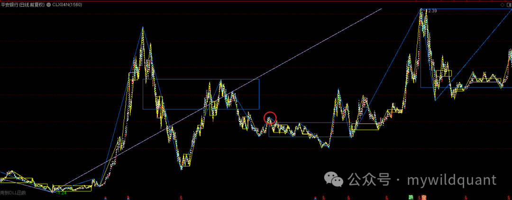
处理方案是对前一个走势类型重新拆分组合（以上涨盘整为例，下跌盘整镜像相反）：
- 把前一个走势类型的结束点，移到除第一个高点外的其他高点中的最高点；
- 排除第一个高点，是为了保证重新切分后每个走势类型仍至少由三段组成。
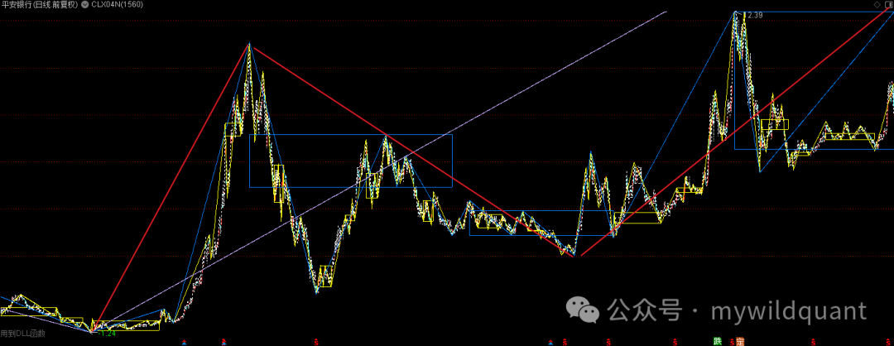
上图红线即修正后的分解：前走势的终点回撤到除第一个高点外的最高点，重新切分出的两个走势类型都保持「至少三段」的合法构成。重写后的算法（2024-12）在这类图形上的划分：
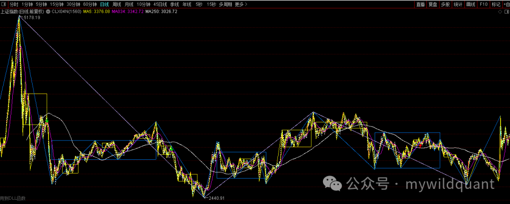
演进脉络与已知边界¶
去掉版本号噪音，走势划分的演进按主题整理：
| 阶段 | 改进 |
|---|---|
| 实验版 | 走势与段的算法分离，4 号函数启用独立走势划分 |
| 迭代期 | 肉眼可见的改进与缺陷并存，多轮推倒重设计 |
| 重划分 | 三类买卖点反向终结的重新拆分组合落地 |
| 重写 | 基于使用反馈基本重写算法，划分稳定可用 |
| 跨平台 | 大智慧、金字塔、交易师同步支持（DUAN2VAR 更名 TRENDVAR） |
| Python | fq_recognise_trend 集成进 Python 包 |
已知边界如实记录：九段升级（中枢延伸满九段后，走势级别按定义应抬升一级）的情形插件尚未处理。划分算法不追求覆盖全部理论情形，未覆盖处明确留白，这与《K线预处理》「规则一致、可复现，不追求唯一真理」的原则一脉相承。
命名与分类：十二种走势类型¶
为什么要命名¶
「向下走势」这个词曾引发过争论：有读者坚持走势要有两个中枢，否则只能叫盘整——术语不统一，交流就不在一个频道上。为此，量化体系把走势类型划分为 12 种分类：上涨 6 种、下跌 6 种互为镜像，每种给定唯一名字。命名的目的有两个：一是用同一术语表达同一形态，消除歧义；二是让程序化实现的分类划分有明确的边界。
下跌形态六种¶
以下跌为例（蓝色为线段，暗红色为走势），上涨形态完全镜像：
一、下跌三段走势：由下、上、下 3 个线段构成，是走势形成时的初始形态，也是最基本的形态。
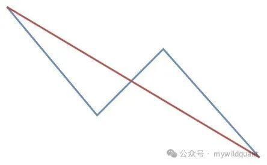
二、下跌盘整走势：最少 5 个线段组成，除进入线段和离开线段外，中间的线段有重叠区间（即含一个中枢）。
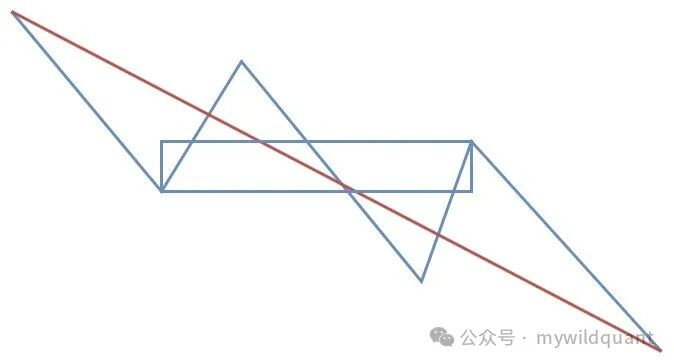
三、下跌三段 + 盘整走势：前面是下上下三段走势，随后线段重叠形成盘整，再加一个离开线段。变种：前面的三段可以是 N 段，如「下跌五段 + 盘整走势」。
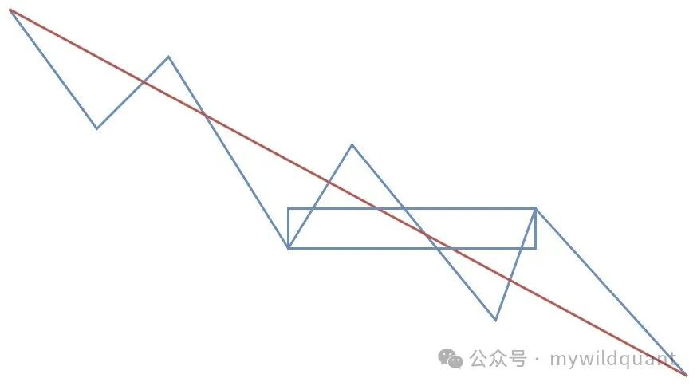
四、盘整 + 下跌三段走势：前一种的镜像排布，盘整在前、三段在后。变种：盘整 + 下跌 N 段走势。
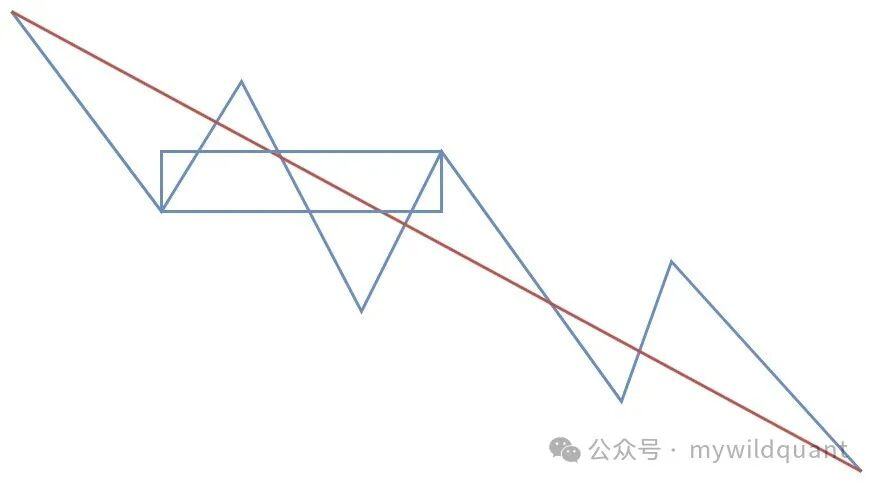
五、下跌趋势走势：经典下跌趋势——「没有趋势没有背驰」里说的趋势就是它。两个及以上依次同向的中枢；中枢波动区间有重叠也不做扩展处理，形成三类买卖点破坏就是新中枢。
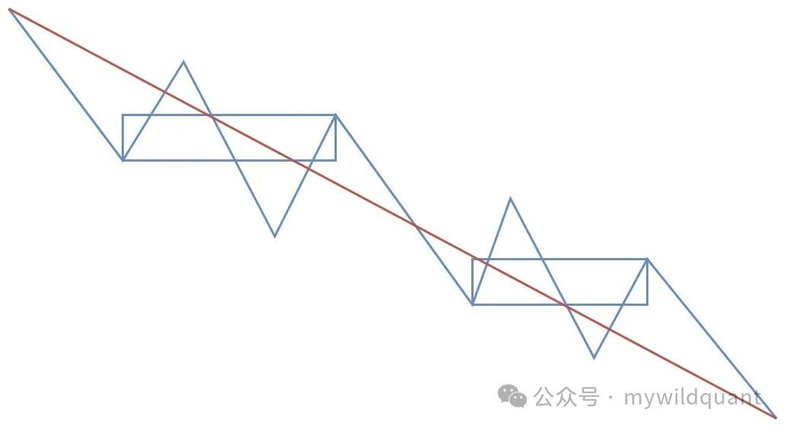
六、下跌五段走势：下跌过程中，线段的特征序列没有重叠区间（特征序列概念见 fqchan06《线段：特征序列划分》），因而既不成盘整也不成趋势。变种：下跌 N 段走势。
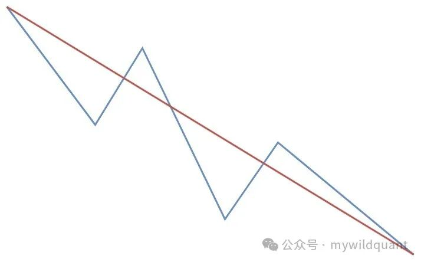
六种形态的判别特征对照：
| 形态 | 最少段数 | 中枢个数 | 判别特征 |
|---|---|---|---|
| 三段 | 3 | 0 | 初始形态，下上下 |
| 盘整 | 5 | 1 | 中间段有重叠区间 |
| 三段 + 盘整 | 7 | 1 | 三段在前，盘整 + 离开段在后 |
| 盘整 + 三段 | 7 | 1 | 盘整在前，三段收尾 |
| 趋势 | 5 | ≥2 | 依次同向中枢；不做扩展 |
| 五段 | 5 | 0 | 特征序列无重叠 |
命名的实战用法¶
命名体系的价值在实盘解读中立竿见影。以下是用当时最新版划分画出的上证 15 分钟图：
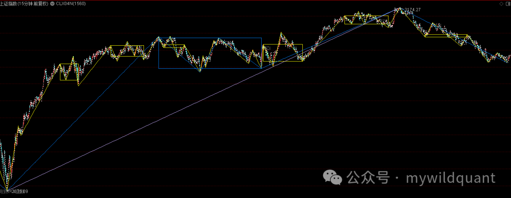
用命名术语可以一句话完成定位：作为最小观测级别，当前上证是 15 分钟上涨盘整走势，当下形成了第一个中枢的延伸，价格正处在次级别下跌盘整走势的一类买点位置。级别、类型、状态、买卖点四个维度在一句话里各就各位——没有这套命名，同样的判断需要一大段描述且仍有歧义。
同级别分解：级别联立与 15K 边界¶
同级别分解的含义¶
分解定理一说任何走势都能分解成同级别走势类型的连接，同级别分解就是把这条定理变成操作纪律：在同一级别上，把走势看成一个个同级别走势类型的依次连接，每个连接点都是操作决策点。它带来的简化是决定性的——不必预测，只需在每个走势类型完成时应对下一段连接的几种可能。
工程上的同级别由递归链条承载：分型 → 笔 → 线段 → 走势，每一级以次级别端点序列为输入（第 2、3 章与本章的 4 号函数）。这条链每一环「大致同级」，同级别分解才成立。
级别联立¶
单看一个级别的走势类型，信息量有限；实战形态是多个级别同时读，两个典型用法：
- 结构联立：选股模型 S0001 是走势、线段、笔三级的联立样本——下跌走势类型（至少 3 段）+ 最低点右侧笔中枢完备 + 最后一笔底分型，三个条件各出一级（《中枢》已详述）。
- 周期联立：在日线、30 分钟、5 分钟三张周期图上各自读走势状态，组合出市场处境的完整刻画（见下节）。
15K 强制成笔：同级别前提的工程保障¶
同级别分解在笔这一级成立的前提，是笔内包含的级别不长大。以日线图为例，标准对应关系是一笔约等于一个 5 分钟级别的走势；如果一笔迟迟不结束，其中包含的级别会不断扩大，同级别交易的前提就被破坏了。
15K 强制成笔正是为此而设的兜底机制：合并 K 线累计达到阈值（15 根，估算依据是 1 分钟走势类型最少约 5 根 K 线、5 分钟级别约 15 根）仍无新笔成立时，强制划分一笔。成笔规则与次高次低演进的完整定义在《笔》，此处只强调它在同级别分解中的角色：强制成笔是「每一笔大致同级」的工程保障，是同级别分解能落到笔级别的边界条件。它定位为兜底算法而非唯一算法，场景分类在渐进补充。
周期图是级别的工程近似¶
严格说，级别由结构递归定义（分解定理二），周期图（1 分 / 5 分 / 15 分 / 30 分 / 日）只是级别的工程载体。说「15 分钟走势类型」，准确含义是「以 15 分钟周期为观测级别的走势类型」——观测级别不等于结构级别，B 的实际级别可能大于观测级别（当下性一节）。工程上接受这个近似：周期可控、可复现、可跨市场对齐，代价是承认划分在极端演化下需要重新解读。
走势状态在策略中的应用¶
走势状态作为策略过滤器¶
走势类型不仅用于画线，更可以作为任意策略的状态过滤器。做法：
- 在日线图上，若最近的缠论信号是买点，标记状态 1；是卖点，标记 0；
- 在 30 分钟、5 分钟图上做同样标记；
- 三个级别的状态组合出 2 的 3 次方 = 8 种走势状态（000 到 111）。
把 8 种状态叠加到任何一个常规策略上——例如一个五连阳动量策略——就得到 8 个子策略。它们输入同一个基础股票池，各自输出子策略股票池与绩效表现，加上原策略合计 9 个策略的矩阵：
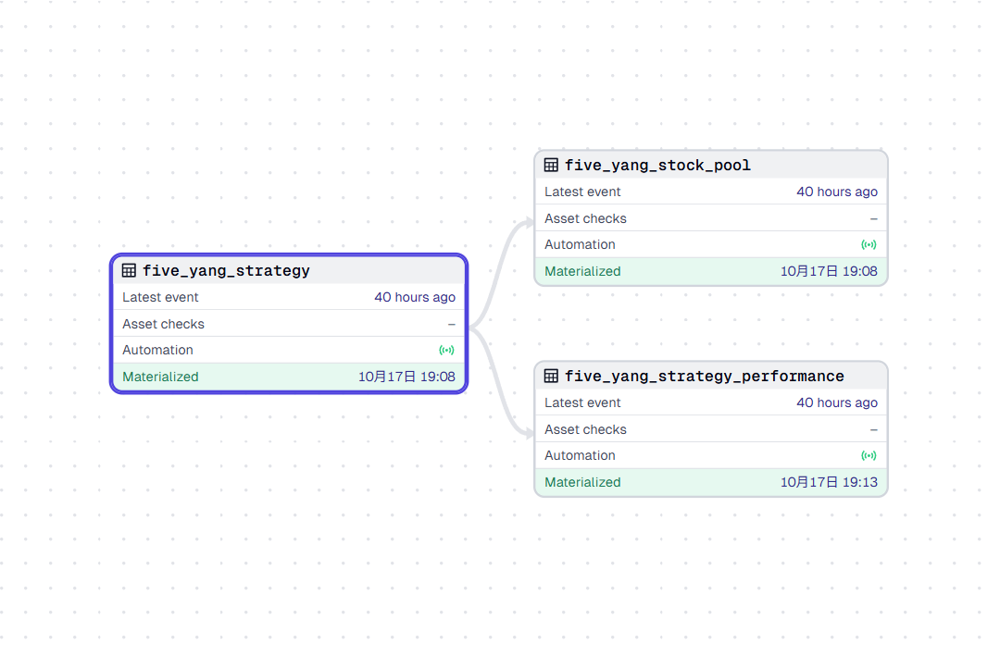
回测验证过的动机：同一个策略在不同时期，成功率和获利情况差异显著（以 7 / 14 / 30 / 90 / 360 天窗口观测）。走势状态就是策略的温度计——读出当前市场处境属于 8 种状态中的哪一种，规避策略在该状态下表现不佳的时段，进而做到股票池之间的依赖转移与策略切换。缠论结构在这里扮演的不是信号源，而是元信息：它回答「现在是什么处境」，策略回答「此刻做什么」。
信号降级：±0.5 历史终点编码¶
走势端点在信号序列里不是简单的 ±1，而是一套带强度的浮点编码：
- ±1.0：当前有效的走势终点，趋势正在发生，由
recognise_trend写入； - ±0.5：历史终点的降级标记——该终点已被更新的走势覆盖，但痕迹还在（内部称 former_ends）。
设计意图是用强度区分「正在发生」和「已经过去」：同一个方向，当前有效终点记满强度 1.0，被覆盖后的历史终点降为 0.5。这与笔、段序列中 ±0.5 的用法同一约定——半强度表示「同方向的非正式端点」——但语义随序列而定：笔序列里是可能被推翻的中间态（《笔》），段序列里是候选成立信号（《线段》），走势序列里是历史终点降级。消费任何 ±0.5 之前，先确认所在序列的语义。
消费规则只有一条：方向只看符号。±0.5 与 ±1.0 在符号维度上一致，表达同一方向、不同强度。跨类型边界传值前，先把值规范化到目标类型的有效值域——例如只认 ±1 的 int direction 形参，传值前用 (x > 0) ? 1 : -1 投影。跳过这一步的后果是一个不崩溃的 Bug：±0.5 经 float→int 向零截断塌缩为 0，函数静默返回空列表，信号凭空消失（完整诊断见《中枢》误区五）。
S0014：走势类型的信号化消费¶
走势状态进入信号体系的样本是 S0014——缠论三类买卖点的量化实现，定位为 S0008 背驰模型的子集与增强：
S0008 背驰信号 → 定位信号所在趋势 → 趋势内找线段中枢 → 价格位置验证 → S0014
双层验证机制跨了两个结构层级：笔中枢层面由 S0008 对比进入与离开中枢一笔的 MACD 特征确认动能转折；段中枢层面由 S0014 验证收盘价是否真正突破最后一个线段中枢的上/下沿（close > zg 保留，否则取消）。顺势场景下还叠加「中枢必须恰为 1 个」的严格 guard（口径分化的推理见《中枢》）。信号值编码继承 S0008 的中枢数量字段——中枢越多结构越稳固，信号强度越高（编码体系详见 fqcopilot 信号值规范）。
三类买卖点的完整判定属于fqcopilot 的《买卖点：一二三类的判定》的主题；此处只看它对走势类型的依赖：「趋势内取中枢」这一步，吃的正是走势划分的输出。走势划分不稳，建立在其上的一切信号模型都会跟着晃——这也是划分算法值得反复重写的原因。
常见误区¶
误区一：把「下跌走势」说成「下跌趋势」。 三段的下上下也是下跌走势类型（初始形态），趋势必须有两个及以上依次同向的中枢。术语混用会让交流与程序边界双双失效——12 分类命名体系就是为消除这个歧义而生。
误区二：脱离「完成」谈类型。 走势类型以完成为前提。右端未完成的结构只能谈当下状态；a+A+b 时不可能预知 B 的级别，B 可以比 A 大，届时前述整体退化为连接段。把未完成结构当已完成类型来数中枢，是划分混乱的常见来源。
误区三：指望划分一次到位、覆盖一切。 算法经历了实验版、反向终结重划分、整体重写多个阶段，九段升级至今明确留白。划分是后验的、概率性的结构（《K线预处理》原则），追求的是规则一致、可复现，不是唯一正确答案。
误区四：拿教科书的中枢扩展口径套插件。 插件口径明确：趋势中中枢波动区间有重叠不扩展，三类买卖点破坏即新中枢。用「中枢扩张升级」的原文口径去对照插件画法，会发现「该合没合」——那不是 bug，是口径。
误区五：把 ±0.5 当噪音丢弃，或原样传给只认 ±1 的接口。 ±0.5 是带强度的有效信息（历史终点降级），不是脏数据；但直接传给 int 形参会截断为 0 并静默返回空。消费前按符号规范化。
误区六：把同级别分解理解为「只看一张周期图」。 同级别分解是「每一级只做同级别操作」的纪律，不是单级别孤立主义。实战形态是级别联立——结构联立（S0001 的三级条件）或周期联立（8 种走势状态），且每一级的「同级」由 15K 强制成笔这类兜底机制保障。
用法¶
公式端（通达信）¶
走势划分走 4 号函数，输入段端点与高低点；15/17/19 号函数在走势端点上输出中枢高、低与起止：
BI:=TDXDLL4(2,H,L,0);
DUAN:=TDXDLL4(3,BI,H,L);
TREND:=TDXDLL4(4,DUAN,H,L);
NOTEXT_TRENDU:DRAWLINE(TREND=-1,L,TREND=+1,H,0), COLORFFAEC9;
NOTEXT_TRENDD:DRAWLINE(TREND=+1,H,TREND=-1,L,0), COLORFFAEC9;
TRENDZG:=TDXDLL4(15,TREND,H,L);
TRENDZD:=TDXDLL4(17,TREND,H,L);
TRENDSE:=TDXDLL4(19,TREND,H,L);
NOTEXT_TRENDZG:IF(TRENDZG,TRENDZG,DRAWNULL),COLORFFAEC9;
NOTEXT_TRENDZD:IF(TRENDZD,TRENDZD,DRAWNULL),COLORFFAEC9;
NOTEXT_TRENDSE:STICKLINE(TRENDSE,TRENDZD,TRENDZG,0,0),COLORFFAEC9;
TREND 为 1 表示走势高点，-1 表示走势低点。历史沿革：旧版公式中的 DUAN2VAR 与 DUAN1VAR 同算法，升级后统一更名为 TRENDVAR，需要重新导入发布包中的公式；fqcopilot 选股时走势端点以代号 40 传入（《中枢》用法）。
大智慧 / 金字塔 / 交易师端¶
三个平台的函数一致，走势顶点与走势中枢：
bi:="fqchan04@BI"(WAVEOPT);
duan:="fqchan04@DUANVAR"(bi);
trd:="fqchan04@TRENDVAR"(duan);
trdzg:="fqchan04@ZSZGVAR"(trd,WAVEOPT,0,PIVOTOPT);
trdzd:="fqchan04@ZSZDVAR"(trd,WAVEOPT,0,PIVOTOPT);
trdsse:="fqchan04@ZSSEVAR"(trd,WAVEOPT,0,PIVOTOPT);
中枢系列函数根据入参不同分别作用于分型、笔、段、走势——传入 trd 即为走势（趋势内）中枢，其中 ZSGSVAR 可输出当前方向上的第几个中枢，是数中枢定类型的现成工具。
Python 端¶
fq_recognise_trend 已集成进 fqchan04 的 Python 包，以段信号为输入：
import fqchan04
length = len(high_list)
bi = fqchan04.fq_recognise_bi(length, high_list, low_list) # 《笔》
duan = fqchan04.fq_recognise_duan(length, bi, high_list, low_list) # 《线段》：段
trend = fqchan04.fq_recognise_trend(length, duan, high_list, low_list) # 本章：走势
返回与 K 线等长的浮点信号序列：1 为走势高点，-1 为走势低点，±0.5 为历史终点降级标记。筛选当前有效端点用精确匹配，不要用非零判断：
# 当前有效的走势高点（排除 ±0.5 历史终点）
trend_tops = [x for x in trend if x == 1]
# 只取方向时，按符号规范化
trend_dirs = [1 if x > 0 else -1 for x in trend if x != 0]
走势信号序列（trend_sigs）是 fqcopilot 全部 18 个模型的标准输入之一，S0013 / S0014 等模型在其上做走势方向过滤与中枢定位；把信号标回 K 线图做人工校准的方法见《中枢》 Python 端。
知识来源¶
- 番茄缠论插件：走势类型的划分，第一个实验性版本，从0到1，发布版本号v20240526（2024-05-26）
- 番茄缠论量化：今天我们来详解走势类型命名与分类逻辑（2024-06-04）
- 番茄缠论插件：走势类型划分的更新，算法更新，发布版本号v20240610（2024-06-10）
- 继续优化走势类型的划分（2024-06-16）
- 番茄缠论插件：更新走势类型的划分，应该有八十趴的完成度，发布版本号v20240619（2024-06-19）
- 「野生量化」番茄缠论插件新动态：番茄缠论插件在大智慧、金字塔平台全面支持走势类型划分（2024-07-03）
- 番茄缠论插件(fqchan04)再更新走势划分（2024-12-08）
- 番茄缠论插件fqchan04更新，python版增加走势识别函数（2024-12-18）
- 番茄缠论插件函数说明（二）（2025-06-15）
- 同级别划分，我要重新定义一下15K强制成笔的情况（2025-08-24）
- 继续昨日15K强制成笔的讨论，且今天发布插件程序更新（2025-08-26）
- Fq开发日志：把缠论的走势状态应用一般的策略中（2025-10-20）
- 今天发布了一个新的模型S0014，也就是缠论的三类买卖点（2026-03-26）
- FqCopilot 0014信号模型来了，即缠论三买三卖（2026-03-26）
- FqCopilot缠论插件（信号值规范体系，从数字读懂每一个交易信号）（2026-05-22）
- FqCopilot缠论插件（被静默吞没的信号）（2026-07-27）
- 缠论原文课程（108 课归档）：教你炒股票 17「走势终完美」、29「转折的力度与级别」、32「走势的当下与投资者的思维方式」、38「走势类型连接的同级别分解」